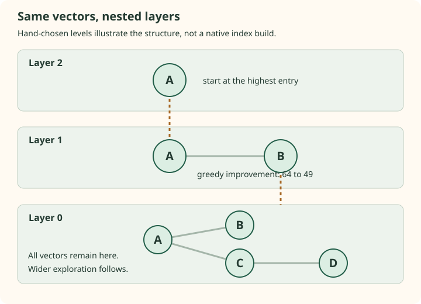

HNSW graphs: why the hierarchy changes the route
A proximity graph gives each vector links to other vectors. Search can follow those links instead of scanning the whole corpus. The difficult part is making the routes useful: a graph can have locally sensible edges and still trap a query far from its nearest neighbor.
HNSW adds nested upper graphs that operate at sparser scales. They help route a query toward a useful entry point before the broader base-layer search. The idea resembles a skip list, but there is no global sorted-key order that makes the final answer exact.
Local similarity and navigability are different properties
Imagine two dense groups of points. Connecting every point only to its closest neighbors may leave each group well connected internally but provide no usable route between them. If the nearest query result lies in the other group, increasing effort cannot recover it from a genuinely unreachable component.
Connectivity alone is not enough either. In our four-node example, A connects to B and C, and C connects to D. All nodes are reachable. Yet a narrow greedy search can reject C because it is farther from the query, losing the route to the nearest D.
A useful navigation graph needs routes that can make progress across scales and regions. The paper combines level randomization, a fixed top entry point, and a neighbor-selection heuristic that can retain different directions. None of these is equivalent to storing an exact nearest-neighbor list for every possible query.
One vector can participate in several graphs
Assign a node a highest level $\ell$. It appears at every level from 0 through $\ell$. Level 0 contains the full corpus. Higher levels contain nested subsets, and each level has its own adjacency lists.
| Node | Highest level | Graphs containing it |
|---|---|---|
| A | 2 | 0, 1, 2 |
| B | 1 | 0, 1 |
| C | 0 | 0 |
| D | 0 | 0 |


Sparser upper layers tend to connect points across larger characteristic distances, because there are fewer potential neighbors. This is a scale argument, not a guarantee that every upper edge is longer than every base edge. Random levels are not labels for semantic topics or document quality.
The coordinates can be stored once while a promoted node has connection lists for several levels. Counting node appearances across graphs therefore does not mean making that many full copies of its vector.
Derive the promotion distribution
The paper samples $U$ uniformly from $(0,1)$ and chooses:
$m_L$ controls the rate at which the population thins. For an integer $j\ge0$, being present at level $j$ means $\ell\ge j$:
A common choice is $m_L=1/\log M$ for $M>1$. Substituting it gives:
The first expression counts nodes present at a level. The second counts nodes whose highest level is exactly that value. Confusing them changes the interpretation of a level histogram.
| Level j | Probability of presence | Expected nodes present |
|---|---|---|
| 0 | 1 | 1,000,000 |
| 1 | 1/16 | 62,500 |
| 2 | 1/256 | 3,906.25 |
| 3 | 1/4096 | 244.14 |
| 4 | 1/65536 | 15.26 |
| 5 | 1/1048576 | 0.95 |
Solving $NM^{-j}\approx1$ suggests a top populated level near $\log_M N$. It is a scale estimate, not a fixed maximum. Under independent level draws, the probability that the highest level reaches at least j is:
A large corpus can occasionally have a taller hierarchy than the estimate. Conversely, an expected population below one does not mean that a layer is impossible.
The expected number of level memberships per node is $\sum_{j\ge0}M^{-j}=M/(M-1)$. At M=16 it is 16/15. Most nodes are base-only, but graph memory still depends on adjacency budgets and storage overhead at each occupied level.
Check three level draws in the reference code
from reference import level_from_uniform
print(level_from_uniform(1.0, 16)) # 0
print(level_from_uniform(0.01, 16)) # 1
print(level_from_uniform(0.001, 16)) # 2Run beside reference.py. The helper explicitly rejects zero because log(0) is undefined. A continuous ideal draw is in (0,1); 1 is accepted as a convenient endpoint that produces level zero.
Trace greedy descent before base exploration
Keep query $q=(0,0)$ and squared distances A:64, B:49, C:81, D:0.25. At the highest layer, A is the only available entry. At layer 1, its link exposes B, whose distance is smaller. The greedy search improves to B and descends from that ID.
Layer 0 now offers the full graph, but ef = 1 still gets stuck at B: its only neighbor A is farther. With retained capacity ef = 3, the reference can explore A, then C, then discover D. The upper hierarchy improved the entry point; it did not eliminate the need for base-layer exploration.
The paper's query algorithm keeps upper exploration greedy and spends broader effort at level 0. Repeating a large ef at every level would be a different operating choice, not the query algorithm described in its Algorithm 5.
The top entry is maintained by construction. If an inserted point receives a higher level than the current maximum, it becomes the new entry point. Being chosen as the entry does not mean it is nearest to future queries.
Read a library's level counters carefully
The paper describes a highest layer numbered from zero. Faiss's stored hnsw.levels values count occupied levels, so a base-only point has stored value 1, not 0. A histogram with an empty bin at zero does not mean that the base graph is empty.
hnswlib 0.8.0 sets the multiplier to 1 / log(M) in its constructor. That means changing M changes more than a graph connection budget under this default configuration: it also changes the promotion rate. A comparison that changes M is not isolating every aspect of graph construction.
These implementation details are checked in the native examples and documented in the Pinecone Faiss walkthrough and the pinned hnswlib constructor.
A short hierarchy is not a complete latency argument
Each expanded node requires inspecting neighbors, and each newly scored dense vector can require O(d) coordinate work. A useful accounting is therefore the number of distance evaluations and graph accesses at each level, not only the number of layers.
The paper reports logarithmic-style scaling in its analysis and tested settings. A worst-case query can still require extensive exploration, and a small ef can stop quickly while returning a poor result. The random hierarchy alone does not establish a universal O(log N) guarantee for arbitrary data, connectivity, metric, or target recall.
Vector dimension, native kernels, cache behavior, insertion order, and the distribution of queries also affect elapsed time. Record them in an experiment before extrapolating a routing intuition into a service-latency claim.
Would making the upper layer include every node improve hierarchy?
It would remove the sparsity that makes it a coarse navigation layer. You would pay to explore a dense population before reaching another dense population. The useful question is whether the sampled upper graph offers good routes at an affordable cost.
If no path reaches a nearest node from the entry, can higher ef always recover it?
No. More effort explores reachable candidates. It cannot cross an absent route. Neighbor selection and graph connectivity are construction concerns, separate from query effort.
Sources
- HNSW paper, Sections 3 and 4 and Algorithms 1 and 5.
- Pinecone HNSW guide, skip-list intuition and Faiss level counters.
- hnswlib 0.8.0 source, default promotion multiplier and entry handling.